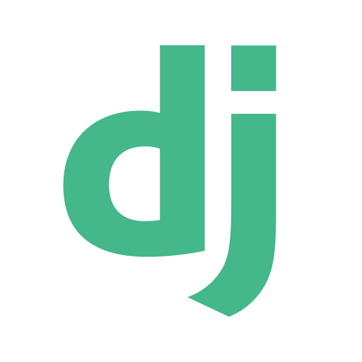
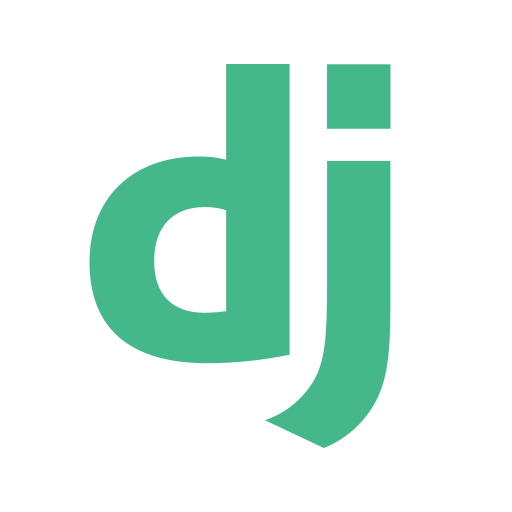

.png)

Meu nome é Raul. Sou estudante do curso de Tecnologia da Informação na UFRN, onde estou mergulhado no mundo da programação e da tecnologia. Desde que entrei no curso, tenho explorado diversas áreas da TI, mas meu coração realmente bate mais forte pela programação em Python. Meu objetivo é continuar explorando novas oportunidades na área de desenvolvimento de software, contribuindo para projetos significativos que impactem positivamente a sociedade.
 



O projeto foi um dos primeiros sistemas que desenvolvi: um sistema de gerenciamento de livros para uma biblioteca utilizando Python e a biblioteca Tkinter. O sistema simplifica o cadastro de livros e usuários, além de gerenciar empréstimos e devoluções de maneira eficiente. A interface é intuitiva, proporcionando uma experiência melhor tanto para quem está usando quanto para os usuários.
O blog foi desenvolvido como parte de um projeto de estudo focado em frameworks para desenvolvimento web. Optei por Python e Django para a criação da estrutura e funcionalidades principais, aproveitando a robustez e flexibilidade dessas tecnologias. Utilizando HTML e CSS, pude personalizar o design e garantir uma interface visualmente atraente para os usuários.
Assim como no blog (projeto anterior) a agenda de contatos foi mais um projeto web que foi desenvolvido para estudos de frameworks para aplicações web. Nesse projeto foi utilizado, assim como no projeto anterior, Python, Django, HTML e CSS para desenvolver todas as áres do site.